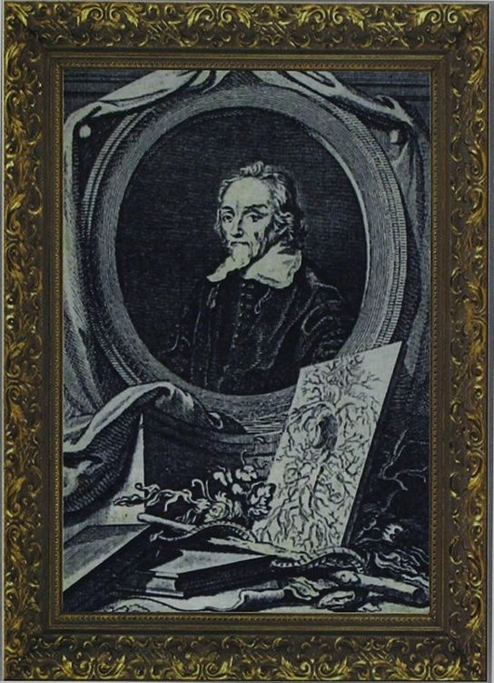
威廉·哈维（William Harvey, 1578-1657）
哈维于1578年4月2日出生于英国的福克斯通，他的父亲先是务农，后来经商并获巨大成功，全家一跃而入上层社会。由于积极参与社会活动和公益事业，他的父亲1586年被选为福克斯通镇的镇长。哈维是家中长子，他的5个弟弟全在伦敦经商且事业有成。
童年时代的哈维天资聪慧，笃志好学，在离家不远的约翰逊小学读书。他对周围的事物充满了好奇心，尤其对小动物感兴趣。
●如今的福克斯通镇
哈维的基础教育是在英国坎特伯雷的一所教会学校金学院完成的，该校位于坎特伯雷教堂附近。
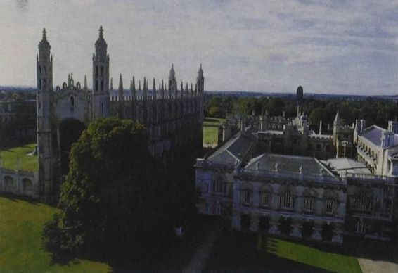
●位于英国坎特伯雷的金学院旧址（右）和小礼拜堂（左）
1593-1597年，哈维在剑桥大学冈维尔—凯厄斯学院学习，获学士学位。大学三年级时因学习过分紧张，积劳成疾，他被迫返乡治病。当时的医疗水平相当落后，哈维饱受“放血疗法”的折磨，于是立志在医学方面做一番事业。
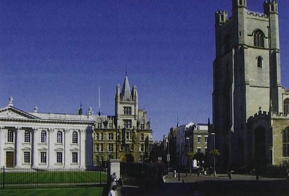
●上图从左到右依次是参议院议政厅、剑桥大学冈维尔—凯厄斯学院、剑桥大学的一个教堂
1599年哈维远赴意大利的帕多瓦大学深造。1602年4月获得医学博士学位。他的博士学位证书至今还保存在伦敦皇家医学会。学位证书上写着：“持此证书者，可在任何国家、任何地区行医、任教、组织答辩、管理学校等。”
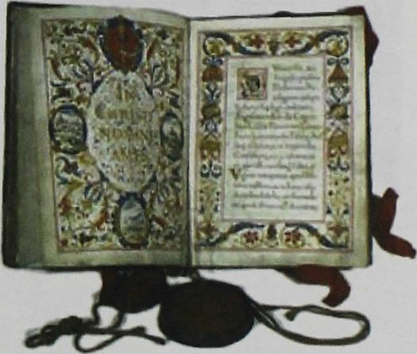
●哈维在帕多瓦大学获得的医学博士学位证书，此证书以精装书的形式装订而成。
中世纪，根据基督教教义，损害人的形象和躯体就是对上帝的亵渎，另外教会极力宣扬“上帝厌恶流血”，因此当时几乎欧洲的所有高等学府都严禁进行人体解剖，连牛津大学和巴黎大学都不敢违抗。但当时帕多瓦所在的意大利威尼斯共和国不承认教会对大学的种种干预，给大学提供许多方便和自治权。维萨里、哥伦坡、法布里修斯等人，都曾在帕多瓦大学工作过，正是他们的研究开创了近代的解剖学传统。帕多瓦大学因重视人体解剖实验而驰名欧洲。帕多瓦大学吸引了欧洲许多有志青年前来求学，培养了一批敢于冲破宗教束缚、大胆创新的科学家。
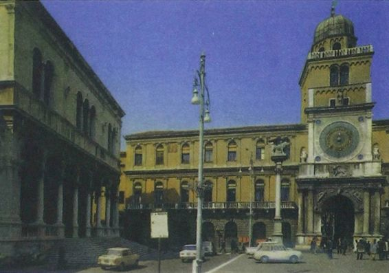
●帕多瓦大学总部，右侧是钟楼
奠定近代天文学基础的哥白尼曾于1501—1503年在此度过了3年医学求学生涯。实验物理学的奠基人伽利略在1592—1610年曾受聘于帕多瓦大学教数学，这一时期也是他从事科学研究取得丰硕成果的黄金时期。
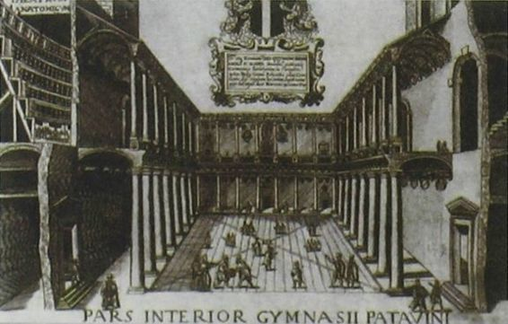
●哈维读书的帕多瓦大学的庭院，法布里修斯和伽利略都在这里教过书。
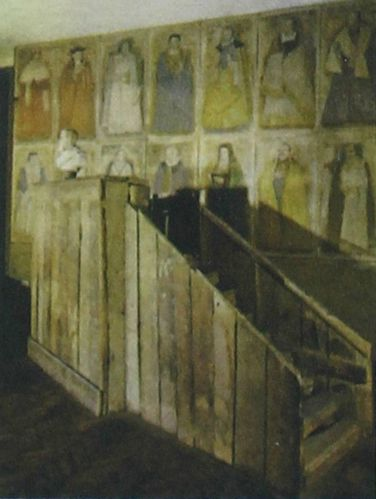
●伽利略在帕多瓦大学教学时用过的讲台
1604年，哈维与伊丽莎白·布朗（Elizabeth Browne）结婚。他的岳父朗斯洛·布朗（Lancelot Browne）是宫廷御医。通过岳父哈维与皇室建立了密切的关系。
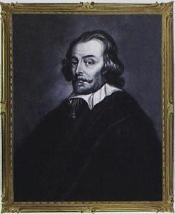
1607年，哈维被推举为英国伦敦皇家医学院成员。自那以后，他的职业生涯与政治就密切相关。
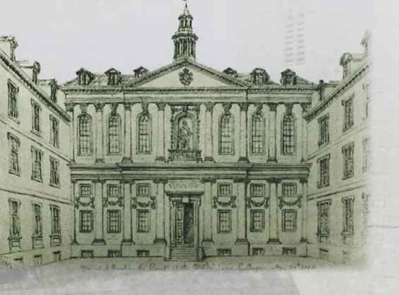
●皇家医学院正面，1828年约翰·布克勒（J. Buckler）画的素描图
1615—1643年哈维被派往圣巴塞洛缪医院工作。圣巴塞络缪医院是伦敦第一家医院，建于1123年。
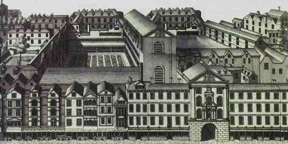
●1723年的伦敦圣巴塞洛缪医院
1615—1656年哈维担任卢姆莱（Lumleian）外科（解剖学）兼职讲师一职，不定期授课。正是从担任外科讲师起，他开始关注血液和心脏的运动问题。
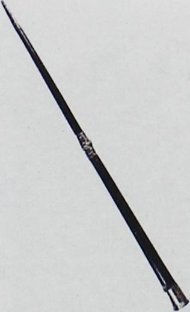
●这是哈维担任皇家医学院卢姆莱外科讲师时用过的教杆，长43厘米，两头和中间的一小段是银制的。
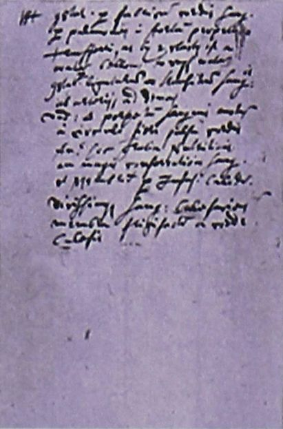
●1617年哈维作为卢姆莱外科讲师时的一页手稿，左上角有其名字的缩写WH。
1616年，哈维开始研究心跳、呼吸运动和脑功能问题。哈维用活体动物解剖的方法对垂死动物的缓慢心跳进行比较研究，为他发现理论奠定了基础。
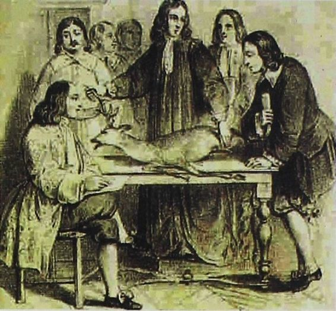
●哈维（正中间）正在解剖一头活鹿
1618年，哈维开始担任詹姆士一世（James Ⅰ，1566—1625）的御医。1625年开始担任国王查理一世（Charles Ⅰ，1600—1649）的御医。哈维与国王查理一世关系密切，国王对哈维的工作极有兴趣，甚至将皇家花园中的鹿提供给哈维以作研究之用。
1628年哈维出版了《心血运动论》一书，系统地阐述了血液循环理论。全书分为三部分，序言对前人的观点进行了摧毁性的批判，在1—8章根据观察结果提出血液循环的理论，在9—17章为肯定血液循环理论提供证据。
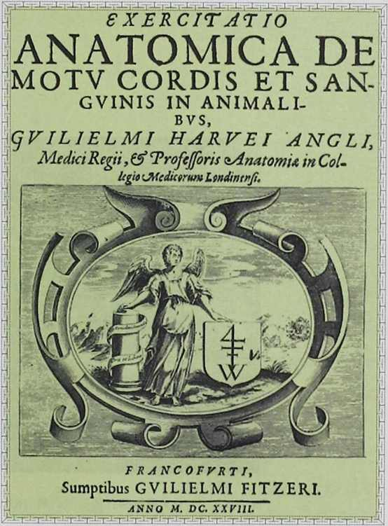
●1628年《心血运动论》的封面
1642年，英国爆发国内战争，哈维始终追随国王，直至国王被俘。1646年11月，议会同意了哈维的请求，允许他到纽卡斯特陪伴被囚的国王。1647年1月，国王被议会处以绞刑。随后哈维回到伦敦，住在他兄弟那儿，并在有限的范围内继续行医。
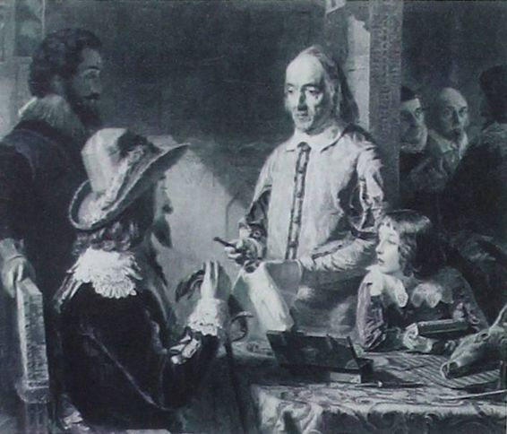
●哈维（左三）在和英国国王查理一世（左二）讨论一只被解剖了的麋鹿。图中的男孩是王储，后来继位，成为查理二世，此图约绘制于1640年。
1651年，哈维出版了关于胚胎学的著作《论动物的生殖》，阐述了自己对鸡（卵生动物的代表）和鹿（胎生动物的代表）等动物生殖方面的观察。他较前人更准确地描述了鸡胚胎的发育，解剖了在交配和怀胎的不同时期雌鹿的子宫，取得了前所未有的资料。
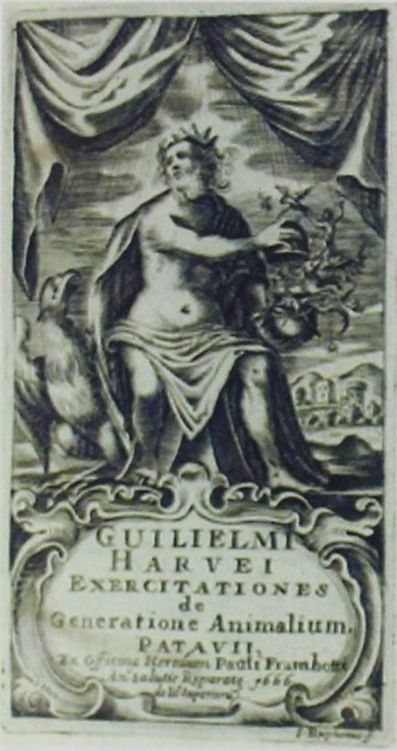
●1651年出版的《论动物的生殖》的封面
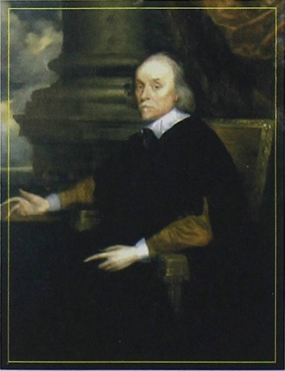
晚年的哈维，深受痛风和肾结石的折磨，1657年死于中风，享年79岁。哈维夫妇终身未育。